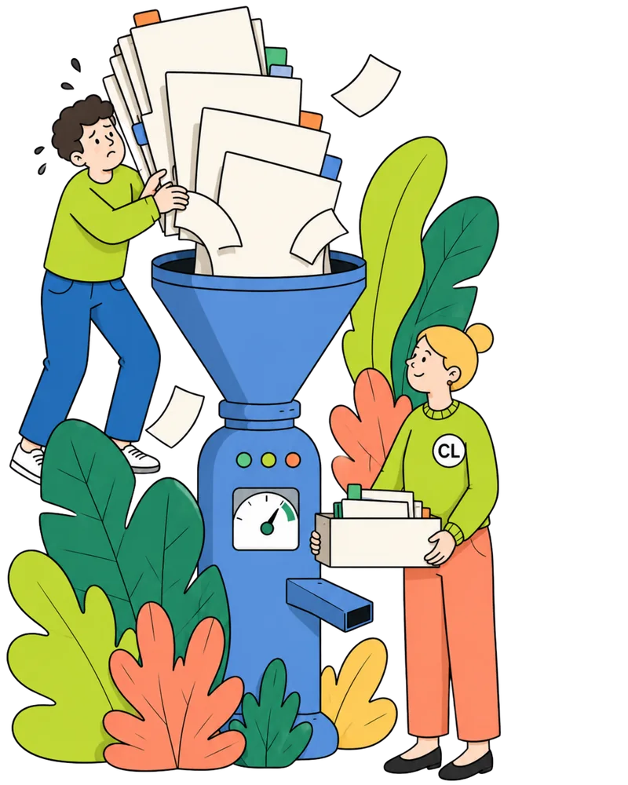

Most plans pass internal review without anyone asking the hard question: what has to be true for this to work, and who has actually checked it? Buyer behavior, market timing, renewal risk, borrowed comparables, the gap is rarely visible until it costs you.
of reviewed launch plans relied on interest signals where buying evidence was needed
the cost of a bad bet, for every quarter you don't test the assumption
We look for the claim that quietly makes the launch date, revenue case, or budget request hold together and test whether it's real.
Positive calls and waitlists show interest. They do not prove buyers will pay, switch, renew, or change workflow.
The plan borrows a pricing move, sales motion, or adoption curve from a market with different urgency, budgets, switching costs, or procurement friction.
Ramp, conversion, retention, payback, and support load are shown separately. If the core number is wrong, several lines move at once.
The team has repeated the plan until it feels proven. The market, the buyer, and the budget owner have not confirmed it.
Written for the meeting where someone will ask what you actually tested.
The proposal uses new-logo demand signals to justify an 18% increase for existing customers at renewal. These are different decisions with different evidence requirements.
The launch memo says customers asked for automation. The evidence supports discovery interest, not a full launch commitment.
Five sales calls and one enterprise prospect are carrying the entire launch case.
Run a beta cohort with 12 active users and measure repeat use after two weeks.
Repeat use rate, activation lift, support burden, and budget owner urgency.
Most teams start with one live decision. Packs are for connected decisions in the same planning cycle.
All checks start with a scope check. Submit the decision first. We confirm fit before asking for payment or materials.
Submit for scope checkA senior analyst reads your materials and writes the brief. No automated summary. A human checks the business context.
We do not sell implementation or stay on to justify the plan. We are paid to name the weak point.
NDA available before you share anything. We do not train on your materials. You own everything you send and everything you receive back.
We review whether the decision fits before sending payment details. If it doesn't fit, we say so.
Takes 5 minutes. Scope check within one business day. No payment until we confirm it fits.

We'll run a scope check first. If the decision fits, we'll send next steps, timing, and payment details within one business day.
What changed after the check.
Four decisions that went differently because someone asked the hard question first.
"We were 48 hours from announcing a pricing change. The check showed us we were solving for new-logo volume while the real risk was renewal churn. We split the rollout. It saved us a very expensive conversation with our largest accounts."
"Our campaign memo read like a strong argument. The check identified we were treating engagement as buyer intent across the wrong segment. We redirected $30k before it went out."
"The fact that they do not tell you what to do is exactly what makes it useful. You get a clear picture of what you are actually betting on. The decision is still yours. Now the risk is explicit."
"The roadmap review caught that we had five features justified by the same two customer quotes. The brief named three linked assumptions we'd never stress-tested. We pushed three weeks and shipped something much stronger."